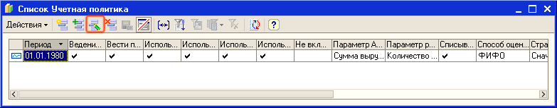
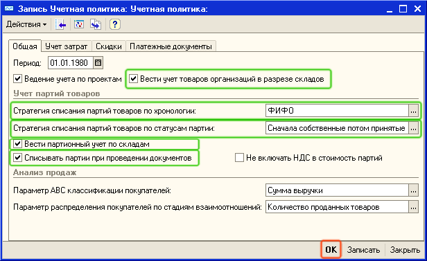
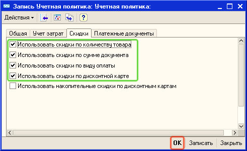

1. Для ввода параметров учетной политики выберите в меню Сервис пункт Настройка учета, а в нем подпункт Учетная политика. При запуске программы и первоначальном заполнении информационной базы уже были заполнены параметры учетной политики по умолчанию.

2. Для просмотра и редактирования информации об учетной политике нажмите кнопку  (или нажмите на клавишу F2 или выберите меню Действия — Изменить).
(или нажмите на клавишу F2 или выберите меню Действия — Изменить).
3. Откроется диалоговое окно, в котором нужно проверить и при необходимости изменить параметры учетной политики торгового предприятия. Информация располагается на нескольких закладках. На закладке "Общие" установите параметры учетной политики торгового предприятия так, как показано на рисунке:

| ПРИМЕЧАНИЕ В поле Период указывается дата, начиная с которой применяется данная учетная политика. Если учетная политика торгового предприятия изменится, необходимо ввести новую запись в регистр сведений Учетная политика, указав новую дату, с которой она применяется. |
4. Перейдите на закладку "Учет затрат". По умолчанию в сумму затрат включается сумма НДС. Если на Вашем предприятии в сумму затрат не должен включаться НДС, то установите флаг "Не включать НДС в стоимость затрат". В нашем демонстрационном примере НДС не должен включаться в стоимость затрат.
5. Перейдите на закладку "Скидки" и установите параметры использования скидок, как это показано на рисунке.

| ПРИМЕЧАНИЕ В демонстрационном примере накопительные скидки по дисконтным картам не используются. О порядке работы с накопительными скидками по дисконтным картам можно прочитать в книге "1С:предприятие 8. Конфигурация "Управление торговлей" редакция 10.3 Описание". |
6. Перейдите на закладку "Платежные документы". На этой закладке определяется порядок регистрации времени оплаты платежного документа, если дата ввода платежного документа и дата его оплаты совпадают. Временем оплаты при этом может считаться время регистрации документа или конец дня.
Нажмите кнопку ОК для сохранения сведений об учетной политике торгового предприятия и закрытия формы Учетная политика .
Следующий раздел: «Установка параметров учетной политики для налогового учета»